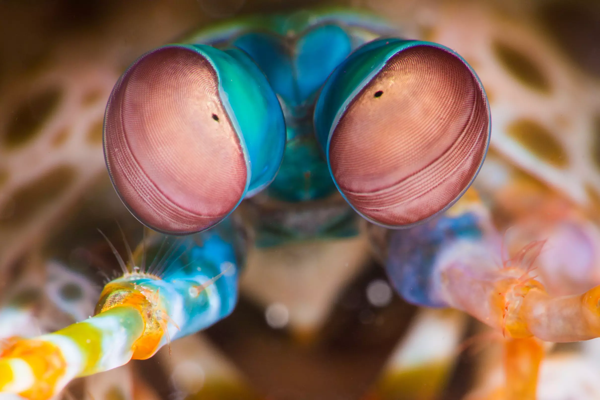

Fatos sobre o Stomatopoda
Thei limbs are so resilient, researchers have been studying their cell structure for use in the development of advanced body armor for combat troops
Thei limbs are so resilient, researchers have been studying their cell structure for use in the development of advanced body armor for combat troops
| Reino: | Animalia |
|---|---|
| Filo: | Arthropoda |
| Subfilo: | Crustacea |
| Classe: | Malacostraca |
| Subclasse: | Hoplocarida |
| Ordem | Stomatopoda Latreille, 1817 |
Stomatopods have the most complex vision in the animal kingdom, even exceeding that of butterflies. The mantis shrimp has compound eyes mounted on stalks, and can swivel them independently of one another to survey its surroundings. While humans have three types of photoreceptors, a mantis shrimp's eyes have between 12 and 16 types of photoreceptor cells. Some species can even tune the sensitivity of their color vision.
The cluster of photoreceptors, called ommatidia, are arranged in parallel rows into three regions. This gives each eye depth perception and trinocular vision. Mantis shrimps can perceive wavelengths from deep ultraviolet through the visible spectrum and into far red. They can also see polarized light. Some species can perceive circularly polarized light—an ability not found in any other animal species. Their exceptional vision gives the mantis shrimp a survival advantage in an environment that can range from bright to murky and allows them to see and gauge distance to shimmering or translucent objects.
Stomatopoda. Wikipedia, 2020. Disponível em: https://pt.wikipedia.org/wiki/Stomatopoda. Acesso em: 21 de outubro de 2020.
Mantis Shrimp. Theoatmeal, 2020. Disponível em: https://theoatmeal.com/comics/mantis_shrimp. Acesso em: 21 de outubro de 2020.
Mantis Shrimp Facts (Stomatopoda). thoughtco, 2020. Disponível em: https://www.thoughtco.com/mantis-shrimp-facts-4582442. Acesso em: 21 de outubro de 2020.